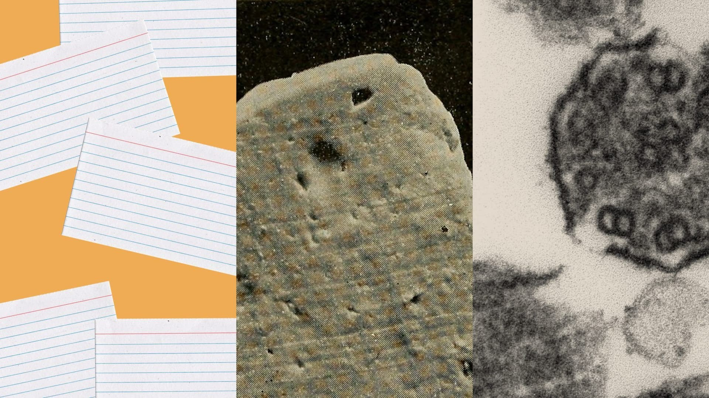

科学（Science） 2026 年 1 月 15 日

已发布 2026 年 1 月 15 日 主题相关内容 * 科学 2026 年 11 月 6 日 教AI构建科学模型
查看更多 去年十月，我们推出了Claude for Life Sciences——一套让Claude成为更优秀科研协作者的连接器与技能。此后，我们大力投入，将Claude打造为最能胜任科学工作的模型，Opus 4.5在图表解读、计算生物学与蛋白质理解等基准上展现出显著提升。这些进展得益于我们与学术界及产业界研究者的合作，也体现了我们致力于准确理解科学家究竟如何运用AI加速研究进程的承诺。 我们还通过AI for Science项目与科学家密切合作，该项目向世界各地从事高影响力科学项目的顶尖研究者提供免费API额度。 这些研究者开发出定制系统，让Claude的使用方式远远超出文献综述或编程辅助之类的任务。在我们走访的实验室里，Claude是一位贯穿研究全流程的协作者：让判断该做哪些实验变得更轻松、更划算，借助各种工具把通常耗时数月的项目压缩到数小时，并在人类可能忽略的海量数据集中发现规律。许多情况下，它正在消除瓶颈，承担那些需要深厚专业知识、过去根本无法规模化处理的任务；在某些情况下，它让研究者得以采用传统上完全无法实现的全新研究路径。 换句话说，Claude正开始重塑这些科学家的工作方式——并把他们引向全新的科学洞见与发现。
生物研究的一个瓶颈在于工具碎片化：可用的数据库、软件包和实验方案数以百计，研究者要花大量时间挑选并掌握各类平台。在理想情况下，这些时间本应用于开展实验、解读数据，或推进新项目。 Biomni是斯坦福大学开发的智能体式AI平台，把数百种工具、软件包和数据集整合进单一系统，供由Claude驱动的智能体在其中调用。研究者用普通英语下达请求，Biomni便自动挑选合适的资源。它能提出假说、设计实验方案，并跨25个以上生物学子领域开展分析。 以全基因组关联研究（GWAS）为例，它旨在寻找与某种性状或疾病相关的遗传变异。例如，绝对音高就有很强的遗传基础。研究者会选取规模很大的人群——其中一些人能在没有任何参考音的情况下唱出某个音高，另一些人则是你绝不会邀请去唱卡拉OK的——然后扫描他们的基因组，寻找在某一组中更常出现的遗传变异。 基因组扫描（相对）简单。真正耗时的是分析并理解数据的过程：基因组数据格式杂乱，需要大量清洗；研究者必须控制混杂因素、处理缺失数据；一旦找到某些"命中位点"，还得弄清它们究竟意味着什么——附近是哪个基因（因为GWAS只指向基因组中的位置）、它在哪些细胞类型中表达、可能影响哪条生物学通路，等等。每一步都可能涉及不同的工具、不同的文件格式，以及大量人工判断。这是个繁琐的过程。一项GWAS可能耗时数月。但在Biomni的一次早期试验中，只用了20分钟。 这听上去好得令人难以置信——我们能否确信这类AI分析的准确性？Biomni团队已通过不同领域的多个案例研究对系统做了验证。在一项案例中，Biomni设计了一个分子克隆实验；在盲评中，其方案与设计和一位有五年以上经验的博士后不相上下。另一项案例中，Biomni仅用35分钟就分析了来自30个人的450多份可穿戴设备数据文件（混合了连续血糖监测、体温与体力活动数据）——这项任务估计需要人类专家三周。第三项案例中，Biomni分析了取自人类胚胎组织的336,000多个单细胞的基因活性数据。系统既证实了科学家已知的调控关系，也识别出新的转录因子——控制基因何时开启或关闭的蛋白质——研究者此前并未将它们与人类胚胎发育联系起来。 Biomni并非完美系统，因此内置了护栏机制，用于检测Claude是否偏离正轨；它也还不能开箱即用地完成所有任务。不过，在它力有不逮之处，专家可以把自己的方法论编写成一个技能——教会智能体专家会如何处理问题，而不是让它临场发挥。例如，在与未诊断疾病网络（Undiagnosed Diseases Network）合作进行罕见病诊断时，团队发现Claude的默认做法与临床医生的做法差别很大。于是他们访谈了一位专家，逐步记录其诊断流程，再教给Claude。借助这些此前只可意会的新知识，智能体表现出色。 Biomni代表了一种思路：把数百种工具汇聚于同一屋檐下的通用系统。但另一些实验室正在构建更专门化的系统——针对各自研究工作流中的特定瓶颈。
当科学家想弄清某个基因的功能时，一种做法是从相关细胞或生物体中把它移除，看看哪里会出问题。约2012年问世的基因编辑工具CRISPR，让这种操作得以精准、大规模地实现。但CRISPR的效用仍受限制：实验室能产出的数据，远远超出其分析能力所能承载的量。 这正是Iain Cheeseman在怀特黑德研究所与MIT生物学系的实验室所面临的挑战。借助CRISPR，他们在数千万个人类细胞中敲除数千个不同基因，再给每个细胞拍照，观察发生了什么变化。这些图像中的规律揭示：功能相近的基因被移除后，往往会造成外观相似的损伤。软件可以检测这些规律并自动把基因归类——Cheeseman的实验室为此构建了一条流程，名为Brieflow（没错，就是布里奶酪的brie）。 但解读这些基因分组意味着什么——基因为何聚在一起、它们可能有何共同点、这是已知的生物学关系还是全新的发现——仍需人类专家逐一基因地梳理科学文献。这很慢。一次筛选就能产生数百个聚类，而大多数从未被深入研究，仅仅因为实验室没有时间、精力，也不具备关于细胞各种功能的深入知识。 多年来，Cheeseman一直独自完成全部解读工作。他估计自己能不假思索地想起约5,000个基因的功能，但要有效分析这些数据仍需数百小时。为加速这一过程，博士生Matteo Di Bernardo试图构建一套系统，把Cheeseman的方法自动化。他与Cheeseman密切合作，弄清楚他究竟如何做解读——查阅哪些数据源、寻找哪些规律、什么让一个发现值得关注——共同构建了名为MozzareLLM的Claude驱动系统（你大概已经看出其中的命名主题了）。 它接收一个基因聚类，做像Cheeseman这样的专家会做的事：识别这些基因可能共有的生物学过程，标出哪些基因已被充分理解、哪些研究尚少，并指出哪些值得进一步跟进。这不仅大幅加快了他们的工作，还帮助他们取得了重要的额外生物学发现。Cheeseman发现Claude总能捕捉到他遗漏的东西。"每次我过一遍都会想，我居然没注意到那个！而每一次，这些都是我们能够理解并验证的发现，"他说。 MozzareLLM之所以如此有用，在于它并非只有一招：它能纳入多种多样的信息，并像科学家一样推理。最突出的是，它会为发现给出置信度，Cheeseman强调这一点至关重要。这帮助他判断是否要投入更多资源去跟进这些结论。 在构建MozzareLLM时，Di Bernardo测试了多个AI模型。Claude的表现优于其他模型——在一个案例中，它正确识别出一条RNA修饰通路，而其他模型将其当作随机噪声置之不理。 Cheeseman与Di Bernardo设想把这些经Claude注释的数据集公开——让其他领域的专家跟进其实验室无暇深究的聚类。例如，线粒体生物学家可以深入研究Cheeseman团队已标记却从未探究的线粒体聚类。随着其他实验室把MozzareLLM用于自己的CRISPR实验，它有望加速对那些功能多年未明的基因的解读与验证。
Cheeseman实验室采用光学混合筛选（optical pooled screening）——一种能在单次实验中敲除数千个基因的技术。他们的瓶颈在于解读。但并非每种细胞类型都适用于混合筛选。一些实验室，如斯坦福大学Lundberg实验室，开展规模更小、更聚焦的筛选，其瓶颈出现得更早：首先要决定以哪些基因为靶点。 由于一次聚焦筛选的花费可能超过20,000美元，且成本随规模上升，实验室通常只针对他们认为_最有可能_与某一病症相关的几百个基因。传统流程是一群研究生和博士后围坐在一份Google表格前，逐个添加候选基因，附上一句理由，或贴一篇论文的链接。这是一场有依据的猜测游戏，参考了文献综述、专业知识和直觉，却受制于人的精力。它也容易出错，因为它依赖的是其他科学家已经弄清并写下的内容，以及屋里的人碰巧记得的东西。 Lundberg实验室正用Claude扭转这一思路。他们的系统不再问"基于研究者已经研究过的内容，我们能做出哪些猜测？"，而是问"基于分子属性，_应该_研究什么？" 团队绘制了细胞中每一种已知分子——蛋白质、RNA、DNA——及其相互关系的图谱。他们标出哪些蛋白质会结合、哪些基因编码哪些产物、哪些分子在结构上相似。随后可以给Claude一个目标——例如哪些基因可能支配某种特定的细胞结构或过程——Claude便在这张图谱中穿行，依据生物学属性与关系识别候选基因。 Lundberg实验室目前正在开展一项实验，检验这套方法效果如何。为此，他们需要选一个研究极少的课题（如果选已被充分研究的对象，Claude可能早已知道既有结论）。他们选了初级纤毛：细胞上天线状的附属结构，我们对其仍所知甚少，却与多种发育和神经系统疾病相关。接下来，他们将进行一次全基因组筛选，看看哪些基因真正影响纤毛形成，并确立真实答案（ground-truth）。 检验方式是把人类专家与Claude作对比。人类将用表格法给出猜测，Claude则借助分子关系图谱生成自己的结果。假如（设想）200个里Claude命中150个，而人类命中80个，那就证明这套方法更优。即便两者在发现基因上大致相当，Claude很可能仍快得多，从而让整个研究流程更高效。 如果这套方法奏效，团队设想它会成为聚焦扰动筛选的标准第一步。实验室不必再靠直觉下注，或采用当代研究中盛行的暴力穷举式做法，而是能对以哪些基因为靶点做出有依据的判断——无需全基因组筛选的基础设施，就能得到更好的结果。
这些系统都不完美。但它们昭示了一个趋势：在短短几年内，科学家已开始把AI作为研究伙伴纳入工作，而它的能力远不止基础任务——事实上，它正越来越能加速、在某些情况下甚至取代研究流程中的许多不同环节。 在与这些实验室交流时，一个共同主题浮现出来：他们所构建工具的实用性，随AI能力的提升而持续增长。每一次模型发布都带来明显改进。就在两年前，早期模型还只能写代码或总结论文，而更强大的智能体已开始（尽管缓慢）复现那些论文所描述的工作本身。 随着工具不断进步、AI模型持续变得更聪明，我们将继续观察并学习科学发现如何随之演进。 欲了解扩展后的Claude for Life Sciences能力的更多细节，请参见此处，也可查看我们的教程。我们也在持续接受AI for Science项目的申请。申请将由我们的团队审阅，其中包括相关领域的主题专家。
Published Jan 15, 2026 Topics
Related articles * Science Nov 6, 2026 Teaching AI to build scientific models
View more Last October we launched Claude for Life Sciences—a suite of connectors and skills that made Claude a better scientific collaborator. Since then, we've invested heavily in making Claude the most capable model for scientific work, with Opus 4.5 showing significant improvements in figure interpretation, computational biology, and protein understanding benchmarks. These advances, informed by our partnerships with researchers in academia and industry, reflect our commitment to understanding exactly how scientists are using AI to accelerate progress. We’ve also been working closely with scientists through our AI for Science program, which provides free API credits to leading researchers working on high-impact scientific projects around the world. These researchers have developed custom systems that use Claude in ways that go far beyond tasks like literature reviews or coding assistance. In the labs we spoke to, Claude is a collaborator that works across all stages of the research process: making it easier and more cost-effective to understand which experiments to run, using a variety of tools to help compress projects that normally take months into hours, and finding patterns in massive datasets that humans might overlook. In many cases it’s eliminating bottlenecks, handling tasks that require deep knowledge and have previously been impossible to scale; in some it’s enabling entirely different research approaches than researchers have traditionally been able to take. In other words, Claude is beginning to reshape how these scientists work—and point them towards novel scientific insights and discoveries.
One bottleneck in biological research is the fragmentation of tools: there are hundreds of databases, software packages, and protocols available, and researchers spend substantial time selecting from and mastering various platforms. That’s time that, in a perfect world, would be spent on running experiments, interpreting data, or pursuing new projects. Biomni, an agentic AI platform from Stanford University, collects hundreds of tools, packages, and data-sets into a single system through which a Claude-powered agent can navigate. Researchers give it requests in plain English; Biomni automatically selects the appropriate resources. It can form hypotheses, design experimental protocols, and perform analyses across more than 25 biological subfields. Consider the example of a genome-wide association study (GWAS), a search for genetic variants linked to some trait or disease. Perfect pitch, for instance, has a strong genetic basis. Researchers would take a very large group of people—some who are able to produce a musical note without any reference tone, and others you would never invite to karaoke—and scan their genomes for genetic variants that show up more often in one group than another. The genome scanning is (relatively) simple. It’s the process of analyzing and making sense of the data that’s time-consuming: genomic data comes in messy formats and needs extensive cleaning; researchers must control for confounding and deal with missing data; once they identify any “hits,” they need to figure out what they actually mean—what gene is nearby (since GWAS only points to locations in a genome), what cell types it’s expressed in, what biological pathway it might affect, and so on. Each step might involve different tools, different file formats, and a lot of manual decision-making. It’s a tedious process. A single GWAS can take months. But in an early trial of Biomni, it took 20 minutes. This might sound too good to be true—can we be sure of the accuracy of this kind of AI analysis? The Biomni team has validated the system through several case studies in different fields. In one, Biomni designed a molecular cloning experiment; in a blind evaluation, the protocol and design matched that of a postdoc with more than five years of experience. In another, Biomni analyzed the data from over 450 wearable data files from 30 different people (a mix of continuous glucose monitoring, temperature, and physical activity) in just 35 minutes—a task estimated to take a human expert three weeks. In a third, Biomni analyzed gene activity data from over 336,000 individual cells taken from human embryonic tissue. The system confirmed regulatory relationships scientists already knew about, but also identified new transcription factors—proteins that control when genes turn on and off—that researchers hadn’t previously connected to human embryonic development. Biomni isn’t a perfect system, which is why it includes guardrails to detect if Claude has gone off-track. Nor can it yet do everything out of the box. However, where it comes up short, experts can encode their methodology as a skill—teaching the agent how an expert might approach a problem, rather than letting it improvise. For example, when working with the Undiagnosed Diseases Network on rare disease diagnosis, the team found that Claude's default approach differed substantially from what a clinician would do. So they interviewed an expert, documented their diagnostic process step by step, and taught it to Claude. With that new, previously-tacit knowledge, the agent performed well. Biomni represents one approach: a general-purpose system that brings hundreds of tools under one roof. But other labs are building more specialized systems—targeting specific bottlenecks in their own research workflows.
When scientists want to understand what a gene does, one approach is to remove it from the cell or organism in question and see what breaks. The gene-editing tool CRISPR, which emerged around 2012, made this easy to do precisely at scale. But the utility of CRISPR was still limited: labs could generate far more data than they had the bandwidth to analyze. This is exactly the challenge faced by Iain Cheeseman’s lab at the Whitehead Institute and Department of Biology at MIT. Using CRISPR, they knock out thousands of different genes across tens of millions of human cells, then photograph each cell to see what changed. The patterns in those images reveal that genes that do similar jobs tend to produce similar-looking damage when removed. Software can detect these patterns and group genes together automatically—Cheeseman's lab built a pipeline to do exactly this called Brieflow (yes, brie the cheese). But interpreting what these gene groupings mean—why the genes cluster together, what they might have in common, whether it’s a known biological relationship or something new—still requires a human expert to comb through the scientific literature, gene by gene. It’s slow. A single screen can produce hundreds of clusters, and most never get investigated simply because labs don’t have the time, bandwidth, or in-depth knowledge about the diverse things that cells do. For years, Cheeseman did all the interpretation himself. He estimates he can recall the function of about 5,000 genes off the top of his head, but it still takes hundreds of hours to analyze this data effectively. To accelerate this process, PhD student Matteo Di Bernardo sought to build a system that would automate Cheeseman’s approach. Working closely with Cheeseman to understand exactly how he approaches interpretation—what data sources he consults, what patterns he looks for, what makes a finding interesting—they built a Claude-powered system called MozzareLLM (you might be seeing a theme developing here). It takes a cluster of genes and does what an expert like Cheeseman would do: identifies what biological process they might share, flags which genes are well-understood versus poorly studied, and highlights which ones might be worth following up on. Not only does this substantially accelerate their work, but it is also helping them make important additional biological discoveries. Cheeseman finds Claude consistently catches things he missed. “Every time I go through I’m like, I didn’t notice that one! And in each case, these are discoveries that we can understand and verify,” he says. What helps make MozzareLLM so useful is that it isn’t a one-trick pony: it can incorporate diverse information and reason like a scientist. Most notably, it provides confidence levels in its findings, which Cheeseman emphasizes is crucial. It helps him decide whether or not to invest more resources in following up on its conclusions. In building MozzareLLM, Di Bernardo tested multiple AI models. Claude outperformed the alternatives—in one case correctly identifying an RNA modification pathway that other models dismissed as random noise. Cheeseman and Di Bernardo envision making these Claude-annotated datasets public—letting experts in other fields follow up on clusters his lab doesn't have time to pursue. A mitochondrial biologist, for instance, could dive into mitochondrial clusters that Cheeseman's team has flagged but never investigated. As other labs adopt MozzareLLM for their own CRISPR experiments, it could accelerate the interpretation and validation of genes whose functions have remained uncharacterized for years.
The Cheeseman lab uses optical pooled screening—a technique that lets them knock out thousands of genes in a single experiment. Their bottleneck is interpretation. But not every cell type works with pooled approaches. Some labs, such as the Lundberg Lab at Stanford, run smaller, focused screens, and their bottleneck comes earlier: deciding which genes to target in the first place. Because a single focused screen can cost upwards of $20,000 and costs increase with size, labs typically target a few hundred genes they think are most likely to be involved in a given condition. The conventional process involves a team of grad students and postdocs sitting around a Google spreadsheet, adding candidate genes one by one with a sentence of justification, or maybe a link to a paper. It's an educated guessing game, informed by literature reviews, expertise, and intuition, but constrained by human bandwidth. It’s also fallible, based as it is on what other scientists already figured out and written down, and what the humans in the room happen to recall. The Lundberg Lab is using Claude to flip that approach. Instead of asking “what guesses can we make based on what researchers have already studied?”, their system asks “what should be studied, based on molecular properties?” The team built a map of every known molecule in the cell—proteins, RNA, DNA—and how they relate to each other. They mapped out which proteins bind together, which genes code for which products, and which molecules are structurally similar. They can then give Claude a target—for instance which genes might govern a particular cellular structure or process—and Claude navigates that map to identify candidate genes based on their biological properties and relationships. The Lundberg lab is currently running an experiment to study how well this approach works. To do so, they needed to identify a topic where very little research had been done (if they’d looked at something well-studied, Claude might already know about the established findings). They chose primary cilia: antenna-like appendages on cells that we still know little about but which are implicated in a variety of developmental and neurological disorders. Next, they’ll run a whole genome screen to see which genes actually affect cilia formation, and establish the ground-truth. The test is to compare human experts to Claude. The humans will use the spreadsheet approach to make their guesses. Claude will generate its own using the molecular relationship map. If Claude catches (hypothetically) 150 out of 200, and the humans catch 80 out of 200, that's proof the approach works better. Even if they're about equal in discovering the genes, it’s still likely Claude works much faster, and could make the whole research process more efficient. If the approach works, the team envisions it becoming a standard first step in focused perturbation screening. Instead of gambling on intuition or using brute-force approaches that have become prevalent in contemporary research, labs could make informed bets about which genes to target—getting better results without needing the infrastructure for whole-genome screening.
None of these systems are perfect. But they point to the ways that in just a few short years scientists have begun to incorporate AI as a research partner capable of far more than basic tasks—indeed, increasingly able to speed up, and in some cases even replace, many different aspects of the research process. In speaking with these labs, a common theme emerged: the usefulness of the tools they’ve built continues to grow in concert with AI capabilities. Each model release brings noticeable improvements. Where just two years ago earlier models were limited to writing code or summarizing papers, more powerful agents have begun, if slowly, to replicate the very work those papers describe. As tools advance and AI models continue to grow more intelligent, we’re continuing to watch and learn from how scientific discovery develops along with them. For more detail on the expanded Claude for Life Sciences capabilities,see here, and our tutorials here. We’re also continuing to accept applications to our AI for Science program. Applications will be reviewed by our team, including subject matter experts in relevant fields.